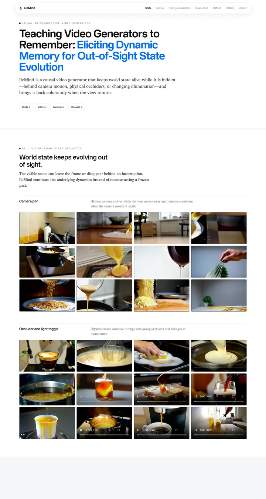

Teaching Video Generators to Remember: Eliciting Dynamic Memory for Out-of-Sight State Evolution
企業研究所のデモリール。浮遊するガラスのピル型ナビ、途中から電光のような青に変わるグロテスク体の見出し、壁一面の動画タイル。

表示されたページと照合済みです。
選んだ理由
青いハイライトを入れたシャープなグロテスク体のタイトル、等幅のアイブロウラベル、そして行ラベルのキャプションを付けて均等にグリッド化した密度の高い動画ギャラリーを備えています。メディアウォールとしての見せ方が優れています。下部にやや空いた帯があるのは小さな欠点です。
以下の説明と DESIGN.md 本文は英語です。コーディングエージェントが同じ一つの版を読めるよう、翻訳していません。
概要
カラーパレット
タイポグラフィ
Applied Sans Display
Teaching Video Generators to Remember: Eliciting Dynamic Memory for Ou
Abstract · Method · Results · BibTeX — 0123456789
Applied Sans Text
Teaching Video Generators to Remember: Eliciting Dynamic Memory for Ou
Abstract · Method · Results · BibTeX — 0123456789
XCharter
Teaching Video Generators to Remember: Eliciting Dynamic Memory for Ou
Abstract · Method · Results · BibTeX — 0123456789
余白と形
ページの構成要素
ガイドライン
似たスタイル

CRAFT: Training-Free Cascaded Retrieval for Tabular QA
淡い青焼きブルーの整った製品マニュアル。どの段階もそれぞれの色の縁をまとっている。

Efficient Self-Evaluation for Diffusion Language Models via Sequence Regeneration
青、すみれ、アプリコットの夜明け色に染まった角丸カードの整った積み重ね。署名はグラデーションのワードマーク。

FIGMA: Towards FIne-Grained Music retrievAl
温かみのある紙に刷った音楽誌。赤いキッカーの下に重厚な Newsreader の見出し、結果を示す大きな赤いセリフ数字、柔らかなクリーム色の枠に収まった図。

GuideDog: A Real-World Egocentric Multimodal Dataset for Blind and Low-Vision Accessibility-Aware Guidance
静かな学術書の一頁。セリフ体の一段組み、リンクには牛血色のインク、自分の行だけをほんのり染める表。

LaMI: Augmenting Large Language Models via Late Multi-Image Fusion
丁寧に作られた学会配布資料。Noto Serif の見出し、ネイビーの枠線ボタン、交互に現れる柔らかなグレーの帯。

PairCoder++: Pair Programming as a Universal Paradigm for Verified Code-Driven Multimodal and Structured-Artifact Generation
すっきりとした白い製品ページ。青いお知らせの帯、墨のように黒いピル型ボタン、柔らかな影のカードに載ったすべての図。